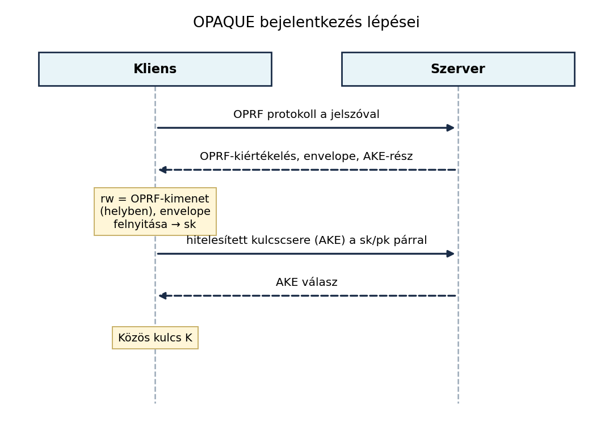

A hagyományos jelszavas hitelesítésben a felhasználó jelszavát – vagy annak valamilyen lenyomatát – a szerver tárolja. Ha a szerver adatbázisa kiszivárog, a támadó offline szótáras támadást indíthat: jelszójelölteket próbál ki anélkül, hogy a szerverrel interakcióba lépne. A Jelszavas és kihívás–válasz hitelesítés alfejezetben látott protokollok éppen ezt a problémát öröklik, mert a szerver által tárolt hash vagy verifier elegendő a jelszó ellenőrzésére. Ráadásul egy közbeékelkedő támadó a lehallgatott hitelesítési üzenetekből is offline szótáras támadást futtathat, ha a protokoll nem megfelelően van tervezve.
A jelszóval hitelesített kulcscsere (password-authenticated key exchange, PAKE) ezt a két hiányosságot egyszerre kezeli. A cél az, hogy két fél – például egy felhasználó és egy szerver – egy gyenge, kis entrópiájú jelszóból erős, nagy entrópiájú közös kulcsot hozzon létre úgy, hogy a protokoll üzeneteinek lehallgatása vagy aktív manipulálása nem teszi lehetővé a jelszó offline kitalálását. A támadó legfeljebb online találgatást végezhet: minden jelszójelölthez egy-egy protokollfutást kell végrehajtania a szerverrel, így a támadás sebességét a szerver érzékelheti és korlátozhatja.
A modern PAKE-protokollok közül az OPAQUE jól mutatja a fő építőelemeket. A regisztráció során a kliens egy feledékeny pszeudovéletlen függvény (OPRF) segítségével a jelszavából és a szerver titkos kulcsából kap egy értéket, majd ebből származtatott kulccsal titkosítja a saját hosszú távú titkos kulcsát. A szerver csak a nyilvános kulcsot és a titkosított borítékot (envelope) tárolja, a jelszót és a titkos kulcsot nem ismeri. A bejelentkezés során a kliens újra lefuttatja az OPRF-et, visszafejti a borítékot, majd a kulcspárral hitelesített kulcscserét hajt végre.

A diagramon látható, hogy a jelszó maga nem szerepel az üzenetekben. A szerver a bejelentkezés során sem ismeri meg a jelszót, csak az OPRF protokollban vesz részt, és a tárolt nyilvános kulccsal ellenőrzi a klienst.
Először a PAKE fogalmát rögzítjük.
Definíció (PAKE protokoll). Két fél, mondjuk Alice és Bob, egy jelszón osztozik (vagy Bob csak egy verifier-t ismer). A PAKE egy interaktív protokoll, amelynek végén mindkét fél ugyanazt a közös kulcsot kapja, ha mindketten helyesen ismerik a jelszót, és a protokoll üzeneteit lehallgató vagy aktívan módosító támadó semmit sem tanul a jelszóról azon kívül, hogy legfeljebb egy online jelszópróbát hajthat végre. A jelszó ismerete nélkül a támadó nem tud elfogadható közös kulcsot létrehozni.
A PAKE-protokollokat két fő osztályba szokás sorolni aszerint, hogy a szerver milyen adatot tárol.
Definíció (balanced PAKE). Balanced (kiegyensúlyozott) PAKE esetén mindkét fél ugyanazt a titkos anyagot ismeri: a szerver is a jelszót (vagy annak közvetlen lenyomatát) tárolja. Ha a szerver adatbázisa kiszivárog, a támadó azonnal birtokába jut a jelszónak vagy a bejelentkezéshez használható ekvivalensének.
Definíció (augmented PAKE). Augmented (kiegészített) PAKE esetén a szerver nem a jelszót, hanem csak egy abból származtatott verifier-t tárol. A verifier nem elegendő a bejelentkezéshez, mert a protokoll során a kliensnek a tényleges jelszót kell ismernie. A szerver kompromittálódása esetén a jelszó nem derül ki közvetlenül, de a verifier ellopása után a támadó offline szótáras támadást futtathat a verifier ellen, ahogy egy sózott jelszó-lenyomat esetén.
Az OPAQUE egy augmented PAKE, amelynek alapja az OPRF.
Definíció (OPRF – feledékeny pszeudovéletlen függvény). Az OPRF (oblivious pseudorandom function) két fél protokollja. A kliens bemenete egy érték (itt a jelszó), a szerveré egy titkos kulcs. A protokoll végén a kliens megkapja az értéket, a szerver pedig semmit sem tanul -ről. Emellett a kliens sem tanul -ról azon kívül, amit elárul. Az OPRF tehát lehetővé teszi, hogy a kliens a jelszavából szerverrel közösen származtasson egy pszeudovéletlen értéket anélkül, hogy a szerver a jelszót megismerné.
Továbbvitt eredmény. Az OPRF fogalmát és az itt bemutatott játékimplementációt használjuk a Oblivious transfer és privát halmazmetszet alfejezetben, ahol az OPRF a privát halmazmetszet alapvető építőköve.
A példa illusztrálja az OPAQUE működését. A valódi OPRF (például a
2HashDH konstrukció) helyett egy egyszerű játék OPRF-et használunk,
amely nem éles használatra való, de a lépések szerkezetét jól mutatja.
Legyen a jelszó "kék24!", a szerver OPRF-kulcsa pedig
(például egy véletlen 16 bájtos érték). A játék OPRF legyen
.
Megjegyzés. A szabványos OPAQUE (RFC 9807, ellenőrzési igény) a kliens kulcspárját az -ből vezeti le, a boríték csak nonce-ot és hitelesítő címkét tárol. Itt a szemléletesebb, -t titkosító változatot mutatjuk be.
Regisztráció:
"kék24!" jelszóval. A szerver a
kulcsával válaszol.Bejelentkezés:
Ha Alice rossz jelszót ad meg, az OPRF kimenete rossz lesz, az envelope nem fejthető vissza, és a kulcscsere nem lesz sikeres. A szerver ilyenkor csak annyit érzékel, hogy egy online hitelesítési kísérlet meghiúsult.
Az SRP (Secure Remote Password) az egyik legrégebbi és legszélesebb körben megvalósított augmented PAKE. Az SRP-6a változat a leggyakoribb. A működés alapja, hogy a szerver nem a jelszót, hanem egy verifier-t tárol, amely a jelszó sózott lenyomatából származtatott csoportérték.
Legyen egy nagy prím, egy primitív gyök modulo , és egy hash-függvény. A regisztráció során a kliens kiszámítja
értéket, majd a verifier-t:
A szerver a verifier-t és a sót tárolja, a jelszót nem ismeri. A bejelentkezés során a kliens egy véletlen kitevővel kiszámolja , és elküldi a szervernek. A szerver egy véletlen kitevővel kiszámolja
ahol az SRP-ben használt, a csoportparaméterekből származtatott szorzó (nem tévesztendő össze az OPRF-kulccsal). A szerver elküldi -t és a sót. A kliens ekkor kiszámolja a közös kulcsot, amelybe az jelszófüggő érték is bekerül, a szerver pedig a verifier segítségével számolja ki ugyanazt. A protokoll végén mindkét fél ellenőrző MAC-értéket cserél.
A lényeg: ha a kliens rossz jelszót használ, az értéke rossz, így a közös kulcs eltér a szerverétől, és a MAC-ellenőrzés meghiúsul. A lehallgatott és értékekből a támadó nem tud offline szótáras támadást futtatni, mert a jelszó kitalálásához a DH-értékekkel konzisztens, a jelszótól függő közös kulcsot kellene ellenőrizni, ami a protokoll futása nélkül nem lehetséges.
Figyelem. Ha a támadó megszerzi a szerver adatbázisát, akkor a verifier értékét ismerve offline szótáras támadást indíthat: minden jelszójelöltből kiszámolhatja az értéket, és ellenőrizheti, hogy . Az SRP tehát véd a protokoll futása közbeni offline támadástól, de a verifier ellopása utáni offline támadástól nem.
Az OPAQUE a PAKE-t három jól elkülöníthető komponensre bontja: OPRF, kulcsszármaztatás (KDF) és hitelesített kulcscsere (AKE). Ez a moduláris szerkezet megkönnyíti a biztonsági elemzést, mert az egyes komponensek önállóan vizsgálhatók.
Az OPRF szerepe az, hogy a jelszóból és a szerver titkos kulcsából egy pszeudovéletlen értéket hozzon létre úgy, hogy a szerver ne tanulja meg a jelszót. A gyakorlatban az OPRF-et úgy valósítják meg, hogy a kliens a jelszavát egy véletlen maszkkal vakolja, a szerver a vakolt értéket a titkos kulcsával hatványozza, a kliens pedig a vakolást eltávolítva kapja meg a kimenetet. Például egy Diffie–Hellman-alapú OPRF-ben a kliens kiszámítja a vakolt alakját, a szerver a saját kulcsával hatványoz, majd a kliens eltávolítja a vakítást, és értéket kap. A szerver a vakított értékből nem tudja visszaállítani -t, mert a kliens véletlen maszkja elrejti.
Az alábbi ábra a három lépést (, , ) egy kis játék-csoportban, konkrét számokkal mutatja, helyes és rossz jelszóval.
Az OPAQUE regisztrációja során az OPRF kimenetből származtatott kulccsal a kliens titkos kulcsát rejtjelezik. Ez a boríték garantálja, hogy a szerver a protokoll során ne férhessen hozzá a kliens titkos kulcsához, és a jelszó se derüljön ki. A bejelentkezéskor a kliens újra megszerzi az OPRF kimenetet, visszafejti a borítékot, és a titkos kulccsal hitelesített kulcscserét hajt végre.
Az OPAQUE fő biztonsági tulajdonsága, hogy a protokoll üzeneteinek lehallgatása vagy módosítása nem ad lehetőséget offline szótáras támadásra. Ha a szerver adatbázisa kiszivárog, a támadó birtokába jut az OPRF kulcsnak, a nyilvános kulcsnak és a borítéknak. Ekkor offline szótáras támadás elvileg lehetséges, mert a támadó minden jelszójelöltből kiszámolhatja az OPRF kimenetet, és megpróbálhatja visszafejteni a borítékot. Ez akkor lassú, ha az OPRF-kimenetből memóriaigényes kulcsnyújtással (pl. Argon2id) származtatjuk a borítékkulcsot, ahogy az OPAQUE előírja (ellenőrzési igény: RFC 9807); ekkor a munka a sózott, lassú jelszó-hash feltöréséhez hasonló. Az OPAQUE előnye az SRP-vel szemben: az OPRF-kulcs titkos, ezért a támadó a kiszivárgás előtt nem tud előszámítást végezni, és csak az OPRF-kulcs ellopása után indíthat szótártámadást. Az OPAQUE a jelszót mégsem fedi fel közvetlenül, és a támadó a megszerzett adatokkal nem tud bejelentkezni a protokoll online futása nélkül. Az RFC 9807 (ellenőrzési igény) az OPAQUE szabványosított változatát írja le.
A WPA2 Wi-Fi PSK hitelesítés egy jól ismert gyengesége az volt, hogy a lehallgatott 4-way handshake-ből a támadó offline szótáras támadást indíthatott a Wi-Fi jelszó ellen. A WPA3 ezt a Simultaneous Authentication of Equals (SAE) protokollal váltotta ki, amely egy balanced PAKE. A SAE a Wi-Fi jelszóból közvetlenül hoz létre közös kulcsot, és a lehallgatott kézfogásból a jelszó nem fejthető meg offline módon. A támadónak minden jelszópróbához online interakciót kell kezdeményeznie a hozzáférési ponttal, ami naplózható és korlátozható. A SAE tehát élesben mutatja a PAKE alapötletét: a jelszó gyengesége nem válik azonnali offline támogatóvá.
Az SAE balanced PAKE, mert a hozzáférési pont is ismeri a jelszót (vagy a PSK-t). Ezért a Wi-Fi esetén a szerver kompromittálódása a jelszó kiszivárgásával járhat. Az OPAQUE és az SRP ezzel szemben augmented PAKE-k, így a szerver nem ismeri a jelszót. A jelszókezelők területén az OPAQUE-szerű technikák aktív kutatás tárgyát képezik, mert lehetővé teszik, hogy a felhasználó jelszava a szerver számára hozzáférhetetlen maradjon, miközben a szerver hitelesíteni tudja a felhasználót. A WPA3 SAE implementációiban találtak időzítéses hibákat is (Dragonblood kutatás), ami arra figyelmeztet, hogy a PAKE protokollok helyes matematikája önmagában nem elég, a megvalósításnak is konstans idejűnek kell lennie.
Azt hinni, hogy a jelszó TLS-en való elküldése egyenértékű a PAKE-val. Ilyenkor a szerver (vagy aki a TLS-t a szerver előtt bontja, pl. egy terheléselosztó vagy naplózó) látja a nyílt jelszót; egy kompromittált szerver a bejelentkezők jelszavát gyűjtheti. Ez elterjedt és elfogadott gyakorlat (lásd a Jelszavas és kihívás–válasz hitelesítés alfejezetet), de ha a szerverbe vetett bizalmat csökkenteni akarjuk, augmented PAKE kell (OPAQUE), amelynél a szerver soha nem látja a jelszót.
A verifier jelszó-ekvivalenssé válik. Ha a szerver a jelszó lenyomatát olyan formában tárolja, amely a hitelesítési protokollban közvetlenül felhasználható, akkor a lenyomat ellopása egyenértékű a jelszó ellopásával. Helyes: a verifier legyen olyan érték, amelyből a jelszó nem állítható helyre, és amely a bejelentkezéshez nem elegendő.
Az online találgatás korlátozásának hiánya. A PAKE csak az offline szótáras támadást szünteti meg; a támadó továbbra is próbálgathat jelszavakat online. Helyes gyakorlat: a szerver korlátozza a sikertelen próbálkozások számát, késleltetést vezet be, vagy fiókzárolást alkalmaz.
Az OPRF hibás implementálása. Ha a „játék OPRF” a jelszót közvetlenül elküldi a szervernek, akkor elveszik a feledékenység. Helyes: valódi OPRF protokoll, például vakított Diffie–Hellman, amely a szerver elől elrejti a jelszót.
A boríték kulcsának gyenge származtatása. Ha az OPRF kimenetét só és lassú KDF nélkül használják, a szerver adatbázisának ellopása esetén az offline szótáras támadás gyors lehet. Helyes: az OPRF kimenetből erős, memóriaigényes KDF-fel (például scrypt vagy Argon2) származtassuk a boríték kulcsát.
1. feladat (A)
Fogalmazd meg a balanced és az augmented PAKE közötti különbséget, és
adj mindkettőre egy-egy konkrét példát.
2. feladat (A)
Az SRP regisztrációja során a szerver a
verifier-t tárolja, ahol
.
Miért nem tud a szerver a verifierből közvetlenül bejelentkezni a
felhasználó nevében?
3. feladat (B)
Tegyük fel, hogy a játék OPRF
.
A szerver
kulcsa 0x01, a kliens jelszava "alma". Számold
ki a
értéket (a HMAC kimenetét nem kell bájtonként megadnod, csak írd le a
számítási lépéseket), és magyarázd el, miért nem tanul a szerver semmit
a jelszóról, ha a protokoll helyesen van megvalósítva.
4. feladat (B)
Az OPAQUE bejelentkezési fázisában a kliens rossz jelszót ad meg. Kövesd
végig, mi történik az OPRF kimenettől a kulcscseréig, és indokold meg,
miért hiúsul meg a hitelesítés.
5. feladat (C)
Bizonyítsd be informálisan, hogy ha az OPRF valódi feledékeny
pszeudovéletlen függvény, akkor a szerver a regisztráció során nem
tanulja meg a felhasználó jelszavát. (Használd az OPRF
definícióját.)
6. feladat (D)
Írj egy rövid Python-függvényt, amely egy játék OPAQUE borítékot készít,
majd visszafejt. Használj hashlib-et a játék OPRF-hez
(például HMAC) és az AES-GCM-hez a cryptography
könyvtárból. Az oktatási kód legyen
# OKTATÁSI CÉLRA – NEM ÉLES HASZNÁLATRA megjegyzéssel, és
mutasson rá, miért kell sót és lassú KDF-et használni a valós
alkalmazásban.
Nem. Balanced PAKE-ban a szerver is ismeri a jelszót; augmented PAKE-ban a szerver nem ismeri a jelszót, de a kliens a jelszót a protokoll során helyben használja. A PAKE lényege nem az, hogy a jelszó soha ne hagyja el a klienst, hanem az, hogy a protokoll üzenetei ne fedjék fel a jelszót, és a támadó ne tudjon offline szótáras támadást indítani.
Mert a PAKE matematikája úgy van kialakítva, hogy a jelszóra vonatkozó minden ellenőrzéshez ismerni kellene a protokoll valamely titkos értékét, amely csak a jelszó birtokában számítható ki. A lehallgatott üzenetek algebrai értékei nem teszik lehetővé, hogy a támadó egy jelszójelöltet a szerverrel való interakció nélkül ellenőrizzen.
A verifier olyan érték, amelyet a jelszóból származtatnak, de önmagában nem elegendő a bejelentkezéshez. A jelszó-ekvivalens olyan érték, amelyet a hitelesítési protokoll a jelszó helyett elfogad, így birtoklása egyenértékű a jelszó ismeretével.
Az OPRF két fél protokollja: a kliens bemenetét, a szerver kulcsát használja, a kliens megkapja -et, a szerver pedig semmit sem tanul -ről. A kliens sem tanul -ról a kimeneten túl.
Az OPRF önmagában csak egy pszeudovéletlen értéket ad a kliensnek, de nem hoz létre közös kulcsot, és nem hitelesíti a feleket. Az AKE a visszafejtett titkos kulcs és a szerver által tárolt nyilvános kulcs segítségével hozza létre a közös kulcsot és bizonyítja a titkos kulcs ismeretét.
A támadó offline szótáras támadást futtathat: minden jelszójelöltből kiszámolja az OPRF kimenetet, abból a boríték kulcsát, és megpróbálja visszafejteni a borítékot. Ha sikerül, megtalálta a jelszót. Emellett nem tud bejelentkezni a protokoll online futása nélkül, mert a titkos kulcsot nem ismeri.
1. feladat (A)
Balanced PAKE esetén mindkét fél ugyanazt a titkos anyagot ismeri: a
szerver is a jelszót tárolja. Példa: a WPA3 SAE, ahol a hozzáférési pont
is ismeri a PSK-t. Augmented PAKE esetén a szerver csak verifier-t
tárol, a jelszót nem. Példa: SRP vagy OPAQUE.
2. feladat (A)
A szerver ismeri a
verifier-t, de nem ismeri az
diszkrét logaritmust modulo
.
A bejelentkezéshez a protokoll során a kliensnek az
-et
(és így a jelszót) használnia kell; a verifier önmagában nem elegendő a
közös kulcs kiszámításához, mert a szerver csak a
értékét tudja felhasználni, a kliens oldali
nélkül nem tudja a kliens által generált értékekkel konzisztens kulcsot
előállítani. A szerver tehát nem tud a felhasználó nevében
bejelentkezni.
3. feladat (B)
.
A HMAC kimenete (Python hmac/hashlib-sel
számolva)
e6b1920422d2191a2388f7daad18c5781fa6273d61247e6a324f61b46f4937f2;
ennek alsó 128 bitje (big-endian, az utolsó 16 bájt)
0x1fa6273d61247e6a324f61b46f4937f2. Ebben a
játék-változatban a szervernek látnia kell
-et
a kiértékeléshez, tehát mindent megtud a jelszóról: a konstrukció
nem feledékeny. Valódi OPRF-ben (vakított DH: a kliens
-t
küld, a szerver
-val
felel, a kliens
-gyel
hatványoz) a szerver csak egy egyenletes eloszlású csoportelemet lát,
így
-ről
semmit nem tanul.
4. feladat (B)
A kliens a rossz jelszóból az OPRF protokollban egy rossz
értéket kap. Ebből rossz
kulcsot származtat, amellyel a boríték nem fejthető vissza, vagy rossz
értéket kap. A hitelesített kulcscsere során a szerver a tárolt
nyilvános kulccsal ellenőrzi a kliens titkos kulcsát; a rossz
nem felel meg a
-nak,
így a kulcscsere hitelesítése meghiúsul, és a szerver elutasítja a
bejelentkezést.
5. feladat (C)
Az OPRF definíciója szerint a szerver bemenete a
kulcs, a kliensé az
jelszó. A szerver a protokoll során csak a vakított értéket kapja, amely
a kliens véletlen maszkjával van elrejtve. A feledékenységi tulajdonság
garantálja, hogy a szerver a kapott üzenetből legfeljebb annyit tanul,
amennyit a saját
kulcsából és a protokoll nyilvános paramétereiből tudhat; ez pedig nem
tartalmaz
-re
vonatkozó információt. Így a szerver a protokollüzenetekből nem ismeri
meg a jelszót. Pontosabban: a regisztráció után azonban birtokolja
-t
és a borítékot, így minden jelszójelöltet offline kipróbálhat. Erős
jelszónál ez nem vezet eredményre, gyengénél igen. Az OPAQUE garanciája
tehát az, hogy a jelszó soha nem kerül a szerverhez, és a kitalálás
jelöltenként teljes, lassított (KSF) számítást kíván, nem az, hogy egy
rosszindulatú szerver semmiképp nem találhatja ki.
6. feladat (D)
Az alábbi példa játék OPRF-fel és AES-GCM-mel készít borítékot.
# OKTATÁSI CÉLRA – NEM ÉLES HASZNÁLATRA
import os
import hmac
import hashlib
from cryptography.hazmat.primitives.ciphers.aead import AESGCM
from cryptography.hazmat.primitives.kdf.hkdf import HKDF
from cryptography.hazmat.primitives import hashes
def mock_oprf(server_key: bytes, password: str) -> bytes:
# Ez egy játék OPRF, nem rejti el a jelszót a szerver elől
data = hmac.new(server_key, password.encode(), hashlib.sha256).digest()
return data[16:] # mod 2^128: az utolsó 16 bájt (big-endian)
def make_envelope(rw: bytes, sk: bytes) -> tuple[bytes, bytes]:
# KEK = HKDF(rw, "OPAQUE-envelope")
hkdf = HKDF(algorithm=hashes.SHA256(), length=32, salt=None, info=b"OPAQUE-envelope")
kek = hkdf.derive(rw)
nonce = os.urandom(12)
ciphertext = AESGCM(kek).encrypt(nonce, sk, None)
return nonce, ciphertext
def open_envelope(rw: bytes, nonce: bytes, ciphertext: bytes) -> bytes:
hkdf = HKDF(algorithm=hashes.SHA256(), length=32, salt=None, info=b"OPAQUE-envelope")
kek = hkdf.derive(rw)
return AESGCM(kek).decrypt(nonce, ciphertext, None)
server_key = os.urandom(16)
password = "kék24!"
rw = mock_oprf(server_key, password)
sk = os.urandom(32)
nonce, envelope = make_envelope(rw, sk)
recovered = open_envelope(rw, nonce, envelope)
print(recovered == sk) # TrueA valós alkalmazásban a játék OPRF helyett olyan OPRF-et kell használni, amely a jelszót nem fedi fel a szervernek, a HKDF-et pedig sóval és lassú, memóriaigényes KDF-fel (például Argon2) érdemes kombinálni, hogy a szerver adatbázisának ellopása esetén az offline szótáras támadás lassú legyen.
A PAKE-protokollok lehetővé teszik, hogy két fél egy gyenge jelszóból erős közös kulcsot hozzon létre úgy, hogy a támadó a protokoll üzeneteiből nem tud offline szótáras támadást indítani; minden jelszópróbához online interakció szükséges. A balanced PAKE-ban a szerver is ismeri a jelszót, míg az augmented PAKE-ban a szerver csak verifier-t tárol, így a jelszó nem derül ki közvetlenül. Az SRP egy klasszikus augmented PAKE, amelynél a verifier , ahol . Az OPAQUE modern augmented PAKE, amely az OPRF-ből, KDF-ből és hitelesített kulccseréből épül fel: a kliens az OPRF kimenetből származtatott kulccsal titkosítja a titkos kulcsát, a szerver pedig csak a nyilvános kulcsot és a borítékot tárolja. A szerver adatainak ellopása esetén offline szótáras támadás lehetséges, de a jelszó nem derül ki közvetlenül, és a bejelentkezéshez online protokollfutás kell. Az OPRF fogalmát a Oblivious transfer és privát halmazmetszet alfejezetben tovább használjuk, ahol az OPRF a privát halmazmetszet alapvető építőeleme.
A fejezet az RFC 9807-re hivatkozik mint az OPAQUE szabványosított
változatának forrására. A WPA3 SAE és a Dragonblood kutatás konkrét
évszámaira és technikai részleteire vonatkozó állításokat friss
forrásból érdemes ellenőrizni. A Python-példában a
cryptography könyvtár API-jának pontos nevei és paraméterei
a telepített verziótól függhetnek.